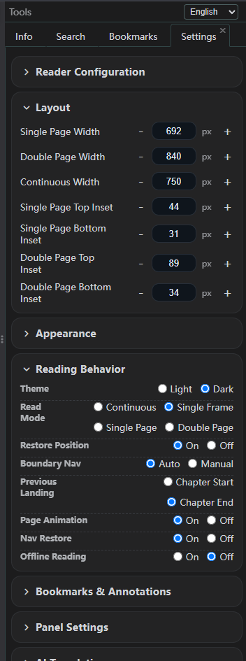

Reading Settings Overview
Click Settings in the toolbar to open the panel. Changes apply at once and are saved automatically.
The eight sections
| Section | What it controls |
|---|---|
| Reader Configuration | Choosing, saving and deleting profiles |
| Layout | Width for each mode, and top and bottom margins in paged modes |
| Appearance | Font, font size, colors, background, line spacing, letter spacing, paragraph margin, custom CSS |
| Reading Behavior | Theme, reading mode, restore position, boundary navigation, page animation, Offline Reading, selection popup |
| Bookmarks & Annotations | Default color for new annotations, and how note previews appear |
| Panel Settings | How many bookmarks and search results fit on a page |
| AI Translation | Translation mode, range, translation theme, source and target language |
| AI Model | The AI service shared by AI Translation and AI Chat |

Saving and restoring
- Every change is saved to the current profile immediately; there is no Save button.
- Changes only affect the reader — the book's file is never modified.
- To keep several setups, use Reading Profiles.